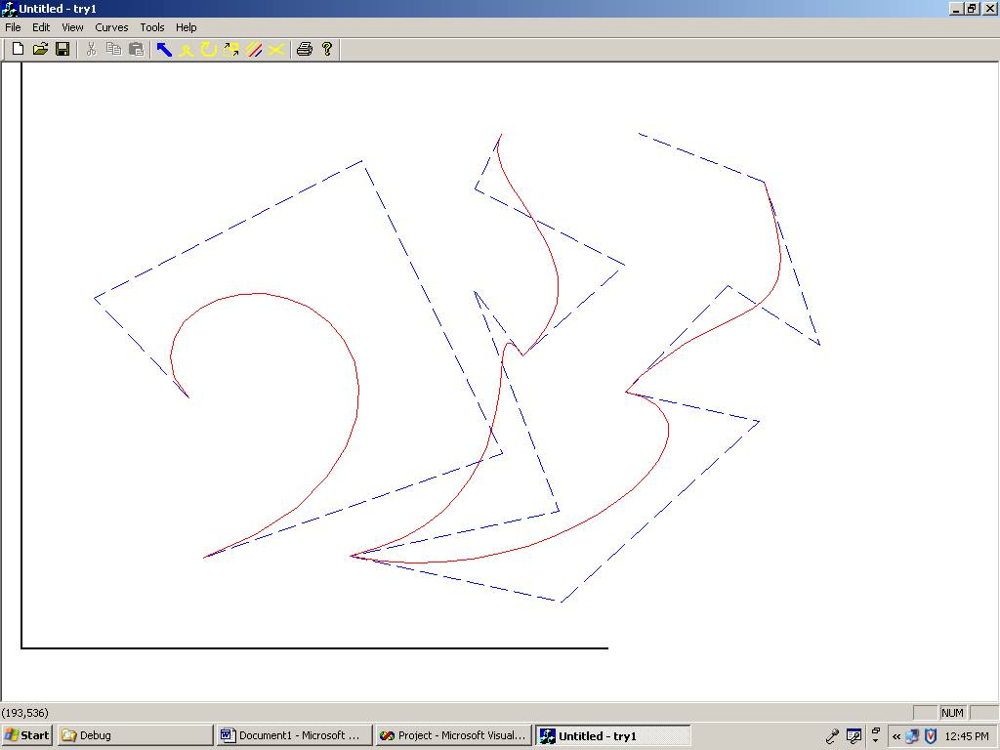
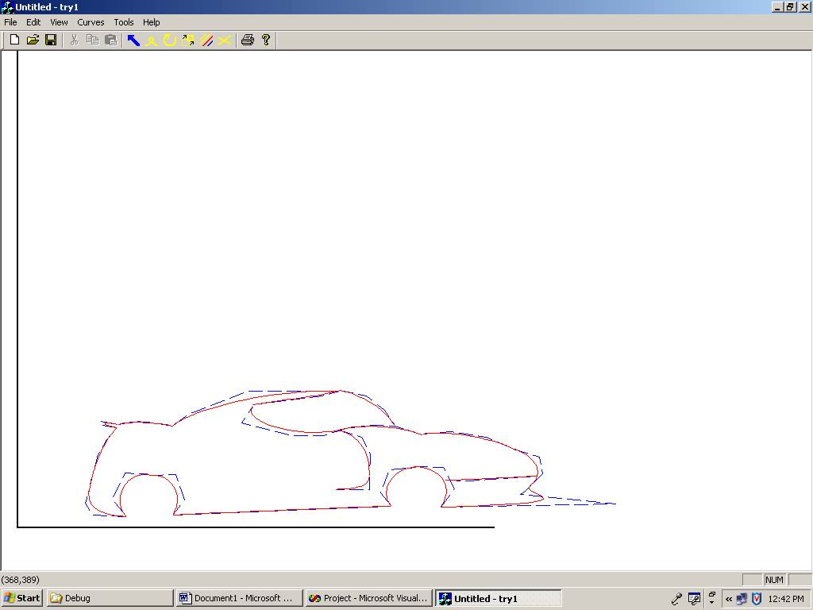
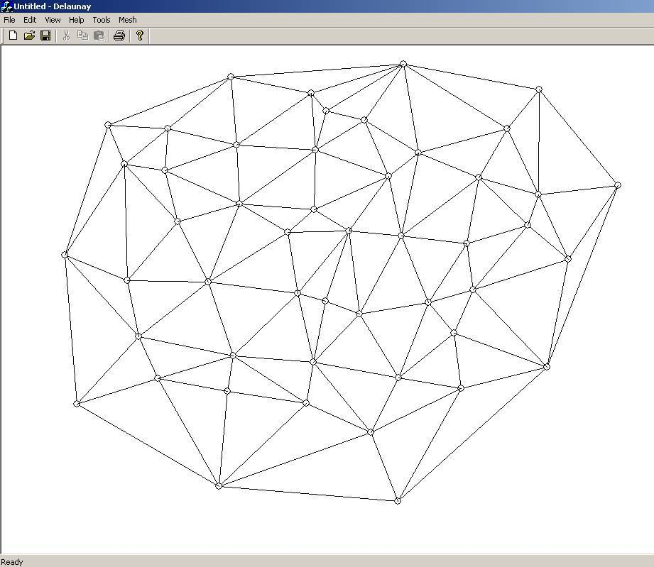

Projects done between 2001 and 2007
Research Projects
Course Projects
Black and Dekker Swing Arm Saw
Angular Features
Cluster of Features
Multi-constraint block
OpenGL T-Maps Creation
T-Maps convolution
T-Maps intersection computation
Leonardo Vinci Mechanism
Futuristic Car Surface Design
Tolerance Analysis Comparison
Chip Substrate Plate Design Report
TRIZ for Conceptual Design
CAD 2002-2003
ACIS Based CSG CAD with Volume Surface and Center Extraction
ACIS Edge and Surface Picking for Feature Parameter Extraction
Computational Geometry 2003
Bezier Curves
CAGD Projects: Bezier Curves: To create a bezier curve, input in the form of control polygon is required. Mouse clicks on the screen adds the consecutive control points. The a degree of the curve is specified. Although degree and number of control points are linked but we might want two bezier curve from 9 CP of degree 4 (each with 5 CP and one common point for C0 continuity). Bezier curves are constructed using the DeCasteljau algorithm. Its easier to debug and visualize if the results at each step are correct. The resultant curve is also shown.

The next figure shows multiple curves. Curve editing, by moving control point (see next figure), or by deleting a whole curve is also implemented. Curves can be translated or rotated. The purpose of the editing tool is create a meaningful shape by combining several curves. A conceptual shape of the car is created as the final task for the project.

Once a desirable shape is created, it can be store as a PostScript file. (Viewable with GSviewer). The control points can also be saved as separate text file so as to open and edit later using the same program.
Delaunay Triangulation and Voronoi
Delaunay Triangulation of a simple point data. Point data can be added as x, y values or by click on the screen. A list of x, y values can be read from a text file also. The triangulation is built by adding each point one at a time. A virtual triangle of large proportions is added first so that any point added lies atleast within the virtual triangle. The virtual triangle or any edges connecting to the vertices of the virtual triangle are not displayed.
Convex hull of the point data. Each triangle's edge is queried for its neighbor having a vertex as the vertex of the virtual triangle. The edge across which such neighbor exists is the edge belonging to the convex hull.

A helpful tool to identify the neighbor of each triangle. This is helpful when debugging the code.

Voronoi diagram of the triangulation. Voronoi diagrams are the dual to the delaunay triangulation. Voronoi diagram can be obtained by connecting the circumcenter (center of the circumcircle) of each triangle to its neighbor's circumcenter. Voronoi diagrams have various uses in path planning but is also used in identifying the location of a mobile phone. Each polygon in the voronoi diagram represents the range served by each mobile tower. The location of the tower is the small circle (see fig.) in the voronoi polygon (vertex of delaunay triangulation).

The adjacent figure shows an application of triangulation to create a triangular mesh, to be used in Finite Element Analysis. The respective Voronoi diagram is also displayed.
.jpg)